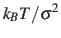
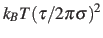
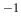

Extended Lagrangian.
The following options enable extended-system
dynamics, where a colvar is coupled to an additional degree of freedom
(fictitious particle) by a harmonic spring.
All biasing and confining forces are then applied to the extended degree
of freedom, and the actual, geometric colvar (function of Cartesian
coordinates) only feels the force from the harmonic spring.
-
extendedLagrangian
 Add extended degree of freedom
Add extended degree of freedom
Context: colvar
Acceptable values: boolean
Default value: off
Description: Adds a fictitious particle to be coupled to the colvar by a harmonic
spring. The fictitious mass and the force constant of the coupling
potential are derived from the parameters extendedTimeConstant
and extendedFluctuation, described below. Biasing forces on the
colvar are applied to this fictitious particle, rather than to the
atoms directly. This implements the extended Lagrangian formalism
used in some metadynamics simulations [#!Iannuzzi2003!#].
-
extendedFluctuation Standard deviation between the colvar and the fictitious
particle (colvar unit)
Context: colvar
Acceptable values: positive decimal
Description: Defines the spring stiffness for the extendedLagrangian
mode, by setting the typical deviation between the colvar and the extended
degree of freedom due to thermal fluctuation.
The spring force constant is calculated internally as
,
where is the value of extendedFluctuation.
-
extendedTimeConstant Oscillation period of the fictitious particle (fs)
Context: colvar
Acceptable values: positive decimal
Default value: 200
Description: Defines the inertial mass of the fictitious particle, by setting the
oscillation period of the harmonic oscillator formed by the fictitious
particle and the spring. The period
should be much larger than the MD time step to ensure accurate integration
of the extended particle's equation of motion.
The fictitious mass is calculated internally as
,
where  is the period and is the typical fluctuation (see above).
is the period and is the typical fluctuation (see above).
-
extendedTemp Temperature for the extended degree of freedom (K)
Context: colvar
Acceptable values: positive decimal
Default value: thermostat temperature
Description: Temperature used for calculating the coupling force constant of the
extended coordinate (see extendedFluctuation) and, if needed, as a
target temperature for extended Langevin dynamics (see
extendedLangevinDamping). This should normally be left at its
default value.
-
extendedLangevinDamping Damping factor for extended Langevin dynamics
(ps)
Context: colvar
Acceptable values: positive decimal
Default value: 1.0
Description: If this is non-zero, the extended degree of freedom undergoes Langevin dynamics
at temperature extendedTemp. The friction force is minus
extendedLangevinDamping times the velocity. This is useful because
the extended dynamics coordinate may heat up in the transient
non-equilibrium regime of ABF. Use moderate damping values, to limit
viscous friction (potentially slowing down diffusive sampling) and stochastic
noise (increasing the variance of statistical measurements). In
doubt, use the default value.
Jérôme Hénin
2015-03-03